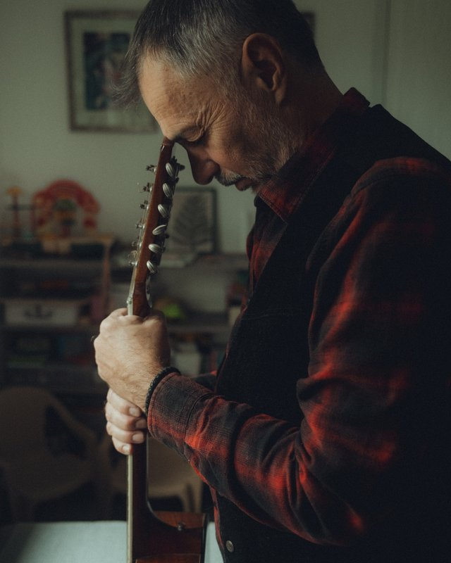
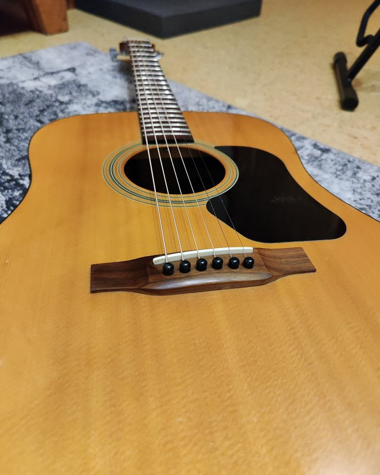
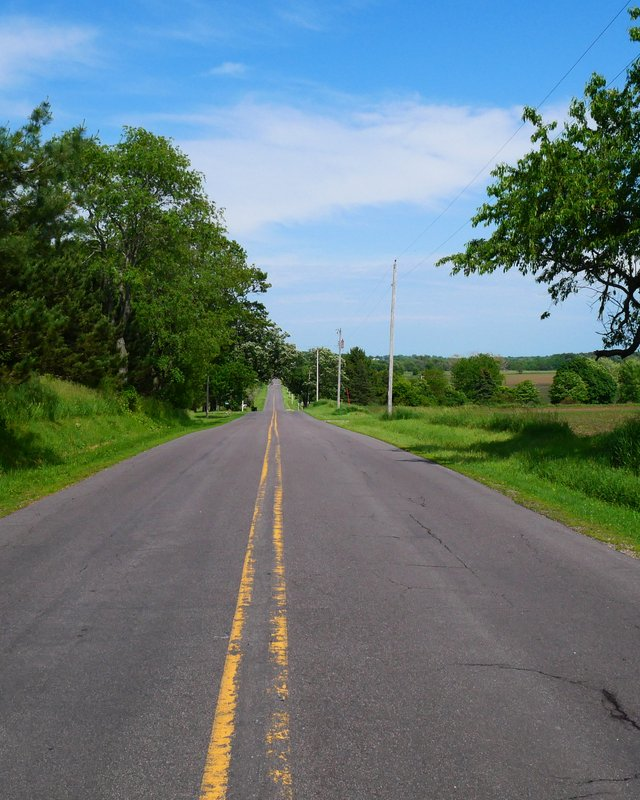
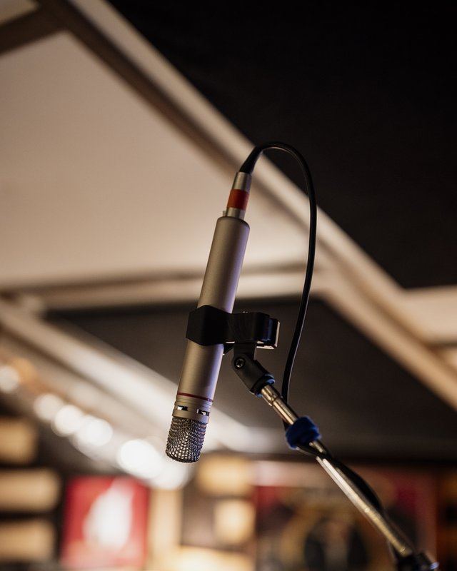
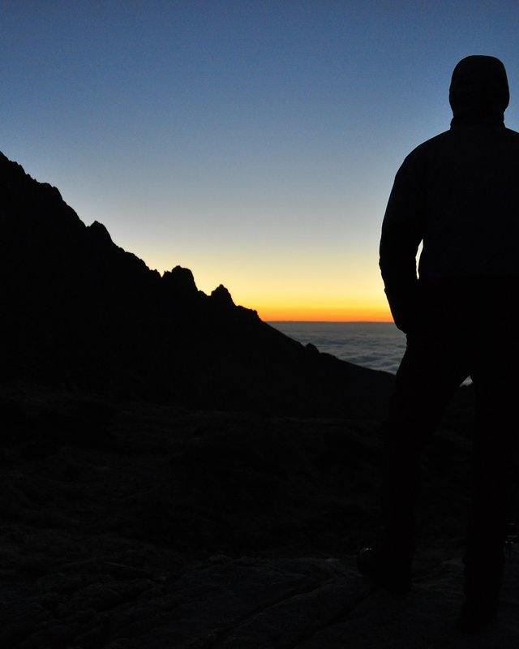

Hey, I am Tapasvi. I did Mechanical from BITS Pilani, where I worked with Dr. Suvanjan Bhattacharyya on thermal systems. Right now I am doing my PhD in Mechanical and Aerospace at NTU Singapore with Prof. Eddie. My day-to-day stack is cold-chain logistics, PCM behavior, sensor telemetry, and ML forecasting. Basically heat transfer core plus real-world deployment mode.
Research, music, chess, and bike rides. This is the core vibe.
Research
Heat transfer, cold-chain intelligence, CFD, and ML pipelines. Deep tech with real deployment focus.
Music
Music is my reset button. Vocals, guitar, keys, and random jam sessions whenever lab life gets too intense.
Chess
I play chess on lichess because open-source energy is elite. You can catch me at my lichess profile.
Bike Rides
Late-night rides, highway flow, and pure throttle therapy. Two wheels keep my head clear.
News & Achievements
Awards, press coverage, and the occasional podcast.
Award
May 2026
Mettler-Toledo Innovator Award
One of two global winners in 2026, USD 20,000 prize, for biodegradable mycelium insulation and thermal/digital modelling work in cold-chain logistics. Sharing the honor with Prof. Carlos Díaz Marín (Stanford).
Received from the Mechanical Engineering Department, University of Minnesota Twin Cities.
Award
January 2024
Cockrell School of Engineering Fellowship
Awarded by the Walker Department of Mechanical Engineering, University of Texas at Austin.
Research
Heat transfer, flow physics, and cold chain intelligence, from simulation to the field.
Heat Transfer Enhancement
Magnetic nanofluids and vibration to push more heat out of mini-channel coolers
Particle Image Velocimetry
Tracking flow fields and collective motion frame by frame
CRYOMOVE
A neural network predicts when a vaccine box will fail, before it does
PCM Formulation
Tweaking the ice itself so it melts slower and holds temperature longer
Passive Insulation
Coatings and foil layers that keep boxes cold for a week, no power needed
Fast Simulation
GPU flow models that get 3D accuracy for a fraction of the compute cost
Bio-Based Materials
Growing insulation out of mushroom roots and farm waste instead of foam
Projects
Build logs from classes, labs, collabs, and random 2am idea sprints.
Plastic Segregator: U_Tokyo
Waste Segregation, Plastic Differentiation
Interval
Music technology, UI/UX design, Python
AirGuitar
Unity, UI/UX design, XR
Pixel Hero
Game design
Final Fantasy Network
Graph visualization, Python, Gephi
Horn and Schunk Model
Self Propelled Movement
Miscellaneous
Side quests that keep me sane: music, bikes, and teaching mode.
Music
Singing, Guitar, Acapella
Bike Rides
Night, Speed, Thrill
Teaching
HT, FM, M&M
The Ride So Far
Quick timeline. More updates soon.
2018
Joined BITS Pilani
Started engineering at BITS Pilani. Thought cracking JEE would auto-solve life. It did not.
2019
Grade Crash
Grades crashed, motivation crashed, then recovery arc started. Had to actually study for real.
Summer 2020
Intern at Bharat Petroleum Corporation Limited
First real industry stint at BPCL Mumbai. Learned refinery workflows, some ML, and how to stay calm in live plant environments.
2020-2022
Chairperson, ASME BITS Pilani
Led a 35 to 40 member team. Ran water-rocket events and pushed ASME's first online global event during lockdown.
Fall 2021
Teaching Assistant
Teaching assistant for Mechanisms and Machines at BITS. This photo's from NTU where we did a skit instead of slides. I'm the one in the helmet, Mallar played the professor.
May-Jul 2022
Intern at JSW Energy Ltd
Summer at JSW Energy across Mumbai and Barmer. Worked on thermal plant and boiler performance with cost-saving proposals.
Nov-Dec 2023
Project Associate at IISc
Short stint at IISc as project associate. Learned fast, pivoted fast, moved on with clarity.
Jan 2024
First Time in Singapore
First time in Singapore with my friend Abhishek. Two Indians trying to decode a new country, one meal at a time.
2024-Present
PhD Student at NTU Singapore
Started PhD at NTU in Mechanical and Aerospace. Also tutoring Fluid Dynamics and Heat Transfer with full concept-first mode.
To Be
Continued
...
Contact
Open to collabs, research chats, and random nerdy ideas.
I have been into bikes since Jaipur days. First ride was a Hero Glamour 125cc. Not a beast, but pure vibe. I learned basic wrenching there: carb, plugs, engine tone, all that garage stuff.
Then came Ignitor. Better pull, smoother shifts, and many Jaipur to Pilani runs. That machine got stolen later, still hurts.
Now in Singapore I ride a Honda CB190X. License cap is 200cc, so this is my max-spec legal setup here. For me it is perfect: upright ergonomics, stable suspension, clean throttle response, and chill long-run comfort. Late-night empty roads are elite therapy mode.
Sometimes I record rides too. Sample below.
Music
Music has been a long side quest. I started with harmonium and vocals as a kid, paused for a while, then came back hard with keys and guitar in college. Mostly self-driven grind, jam-heavy learning, and random stage gigs.
Performances (Public and Personal)
Here is me performing Despacito at BITS. My sidekick here is
Umang Jain.
Here is a sample from my late-night no-sleep recording sessions.
The song: Labon Ko. I've added the guitar, the vocals and the beatboxing (weird) layers separately.
I have tons of clips like this with guitar, keys, vocals, and beatbox attempts. I will keep updating this section.
The Cover Wall
Not one session, not one night. These are separate recordings from different days, sometimes solo and sometimes because someone showed up and got roped into it. A couple of these I recorded twice, on different days, because I wasn't done arguing with myself about how the song should go. Consider it an ongoing, unglamorous archive rather than a discography.
Solo
Kaise Hua
Just guitar and vocals, recorded on its own on an ordinary evening. No band, no plan.

Solo · Voice Recorder
Darkhaast
A quiet solo take, recorded alone into a plain voice recorder. Raw, no multitrack, no cleanup.

Retake
Darkhaast, Again
A separate recording, made later, after
Mushi visited and I decided the first take wasn't it.

Cover · Take 1
Dooron Dooron
A cover of Paresh Pahuja's song. First attempt at one that's harder to sing well than it sounds.
Cover · Take 2
Dooron Dooron, Take 2
A second pass at the same cover, a different day, because I wasn't fully sold on the first one.

Solo · High Pitch
Haareya
A later re-take, pitched a full register above where I'd normally sing it, recorded on its own just to see if I could.
Solo
Tere Liye
A quiet solo cover, recorded on its own. No other takes of this one.

Solo · Tamil Cover
Aasa Kooda
A raw, unpolished solo take on the Tamil song. Recorded on its own, no cleanup, no second take.
Teaching
Teaching keeps my fundamentals sharp. My flow is simple: concept map first, equations next, then problem-solving reps till the logic sticks.
My Teaching Adventures
Fall 2021: Mechanisms and Machines, BITS Pilani
TA for this course at BITS Pilani. Recordings got lost, but that semester taught me how to explain tough mechanics in plain language.
2021-2022: AutoCAD Sessions, BITS Pilani
Led some AutoCAD workshops. Majorly as a part of the M&M course.
Fall 2024: Fluid Mechanics, NTU Singapore
Took in-person sessions at NTU with interactive discussions and real-world case breakdowns.
Spring 2025: Heat Transfer, NTU Singapore
Ran Heat Transfer classes at NTU with a problem-first style and concept clarity focus.
Fall 2025: Heat Transfer (Round Two), NTU Singapore
Back with Heat Transfer at NTU. Going all in to make it a party. Check the YouTube playlist for the Fall 2025 tutorials!
More notes and tutorial drops coming every semester.
Smart 3-in-1 Plastic Separation System
At the University of Tokyo research camp (July 2025), I worked in a 46-member global cohort from 10 universities. Mission: build a practical, high-throughput plastic sorting system for real recycling lines.
Event:
University of Tokyo International Summer Research Camp
Our architecture combines electrostatic separation, acoustic resonance, and electromagnetic control. It hit 90-95% sorting accuracy on mixed plastic streams and stayed stable even with messy input feed.
How it works:
1. Electrostatic Separation: Plastics get triboelectrically charged as they slide along the belt, then pass through a high-voltage electric field (~40 kV) where charge differences cause lateral deflection, achieving >95% sorting accuracy.
2. Acoustic Resonance Separation: Using ~40 Hz acoustic waves, plastics vibrate differently based on their stiffness (Young's modulus), allowing separation with ~90% accuracy through resonance amplitude variations.
3. Electromagnetic (EM) Separation: The breakthrough component. Pulsed EM fields at 60 kHz and 100 kHz target differential dielectric polarization dynamics. PVC, with chlorine atoms in its polymer chain, has higher dielectric loss and sticks to the belt longer at 100 kHz, while PET slides off, enabling >95% separation accuracy.
My primary contribution focused on the physics and system modeling for the electromagnetic module, tuning the pulsed field frequencies and stick-slip parameters to cleanly separate PET and PVC. I coordinated with external APAC collaborators to validate our models and developed comprehensive testing plans for handling dielectric polarization with ionic dynamics on a conveyor belt.
Impact and Specifications: Our prototype processes 50 to 1,500 kg/hour depending on setup, with estimated cost around US$118k to 195k including maintenance. As global plastic use grows, this system can reduce contamination, improve sorting quality, and keep industrial throughput practical.
After weeks of equations, design reviews, and rapid prototyping, we shipped a working system with strong reliability and practical complexity. Not just a demo. It is a serious step toward circular manufacturing.
NTU Team Experience: Special thanks to Prof. Yang Jianfei, who arranged this incredible opportunity for us NTU students and captured many memorable moments throughout the camp.
This project won Best Innovation and gave us a clean blueprint for scaling smarter sorting systems.
Particle Image Velocimetry
I use PIV pipelines with Vicsek-model thinking and cross-correlation tracking to study collective motion. Focus areas are flow field reconstruction, velocity coherence, and emergent dynamics in biological swarms.
Heat Transfer Enhancement
This work targets high-performance cooling in mini-channel systems for solar, EV thermal management, and industrial exchangers. The toolbox includes magnetic nanofluids, vibration control, and external magnetic forcing.
We study how vibration frequency and magnetic field strength reshape boundary layers and secondary flows. Target is higher heat transfer with controlled pressure penalty. Results are published in Results in Engineering and Numerical Heat Transfer.
We also run exergy analysis to track energy quality, not only temperature reduction. End goal is robust thermal design that survives real operating constraints.
Timeline: January 2022 - Present
Mentors: Dr. Suvanjan Bhattacharyya
Collaborators: Naman Jain, Ali Cemal Benim
CRYOMOVE: Predicting Cold Chain Failure
PCM, or phase change material, is what keeps a vaccine box cold without power. The problem is that it does not melt at a fixed rate. It depends on the outside temperature, which keeps changing during a delivery. Re-running a full CFD simulation every time the temperature shifts is too slow to be useful in the field.
So instead, we trained a small neural network on simulation data to learn the melt curve directly. Sensors on the box send live temperature readings to the cloud every 10 minutes, the model predicts how much longer the PCM has before it melts, and cold chain managers get a warning before the box actually fails, not after. It is built to extend beyond vaccines too, into food and general cold storage.
Collaborators: Manit Baser, Abhishek Tyagi, Prof. Eddie Yin Kwee Ng
PCM Formulation
One direct way to keep a cold box cold for longer is to slow down the ice itself. We added a small amount of glycerol, about 5%, to n-tetradecane, a common cold chain PCM, and ran numerical simulations to see what changed.
The additive stretched the safe cooling window from about 123 hours to about 144 hours, roughly 20 extra hours, and the mixture stayed thermally stable for longer too. It is a simple, cheap tweak to the material itself, no new hardware needed, with a real payoff for how long a vaccine stays safe in transit.
Collaborators: Naman Jain, Prof. Eddie Yin Kwee Ng
Passive Insulation
PCM only works well if the box around it is not leaking heat. We tested epoxy coatings and multilayer aluminium foil insulation on eutectic cold boxes under tropical conditions, 32-34°C and 75-85% humidity, over a full week.
Dual-layer foil cut heat gain by 57%, and the coated boxes held sub-5°C temperatures for 7 days versus the usual 2-3 days that most unpowered boxes manage. All of it with no electricity, which matters most in places where power is not reliable.
Collaborators: Hamid Saeedipour, Nikhil Sachdeva, Antara Chakraborty, Chew Tong Howe, Prof. Eddie Yin Kwee Ng
Fast Simulation
Full 3D CFD gets the physics right but is too slow for quick design iteration. We built a reduced-order model using the Lattice Boltzmann Method that runs a fast 2D GPU simulation and adds a physics-informed correction for the 3D heat paths it misses.
The correction is calibrated once on a real box and then reused across different payloads in the same enclosure, no re-tuning needed. Tested against real cold-box experiments plus an independent dataset, it matched real temperatures closely while running far cheaper than full CFD, making it practical for fast design iteration.
Collaborators: Soham Jain, Prof. Eddie Yin Kwee Ng
Bio-Based Materials
Most cold chain insulation is foam: energy-intensive to make, and it does not biodegrade. We grew mycelium from Ganoderma lucidum on waste cardboard, rice husk, and oats, and let the fungus bind the waste into a bio-fiber envelope.
It insulates about as well as foam, is hydrophobic, fire-resistant, and fully biodegradable, with far lower carbon emissions and energy demand than typical cold chain materials. We paired it with a digital twin for real-time monitoring, since a bio-material's performance can vary more than a manufactured foam's. Still early-stage: results hold for the prototype sizes and conditions tested so far, and scaling it up is ongoing work.
Methods: Mycelium biofabrication, digital twin monitoring, materials characterization
Collaborators: Deepak Sharma, Prof. Eddie Yin Kwee Ng, Prof. Hortense Le Ferrand
Mettler‑Toledo Innovator Award — 2026
Short and sweet: one of two global winners in 2026 — prize: USD 20,000.
Tapasvi Bhatt PhD Scholar, NTU
Carlos Díaz Marín Assistant Prof., Stanford
Quick take: my group and I won the Mettler‑Toledo Innovator Award for work on biodegradable mycelium insulation + thermal/digital modelling — practical, low‑carbon insulation for real cold chains.
Supervisors on this project: Dr. Deepak, Prof. Hortense, and Prof. Eddie. Big thanks for the push and keeping the work grounded.
Also on the announcement: Prof. Carlos Díaz Marín (Stanford). Nice to be on the same platform as a Stanford PI — kind of surreal during my PhD. Our projects are separate; this is just a cool shared moment.